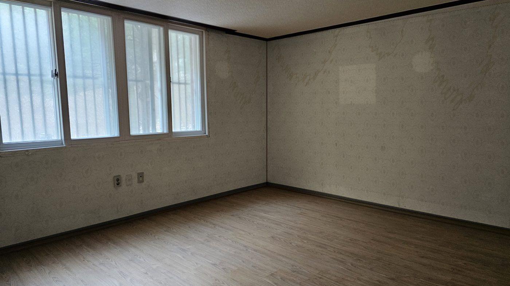
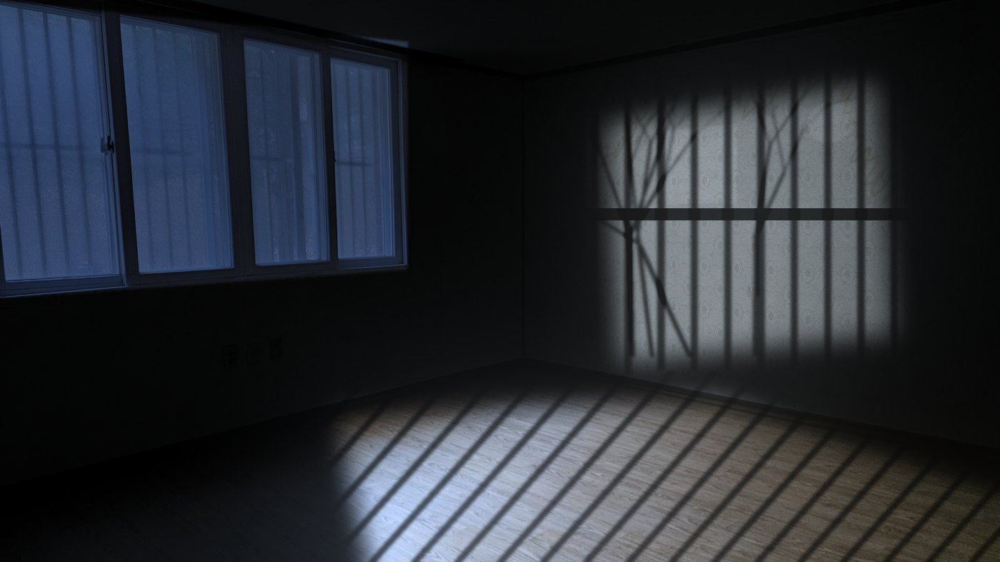
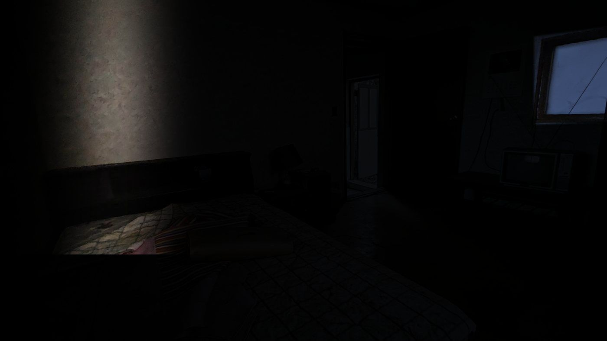
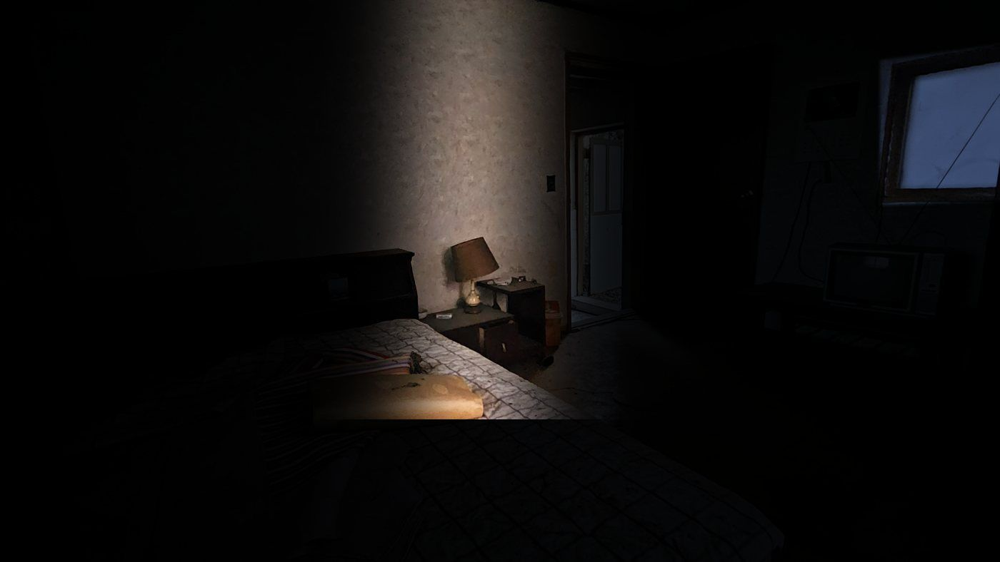
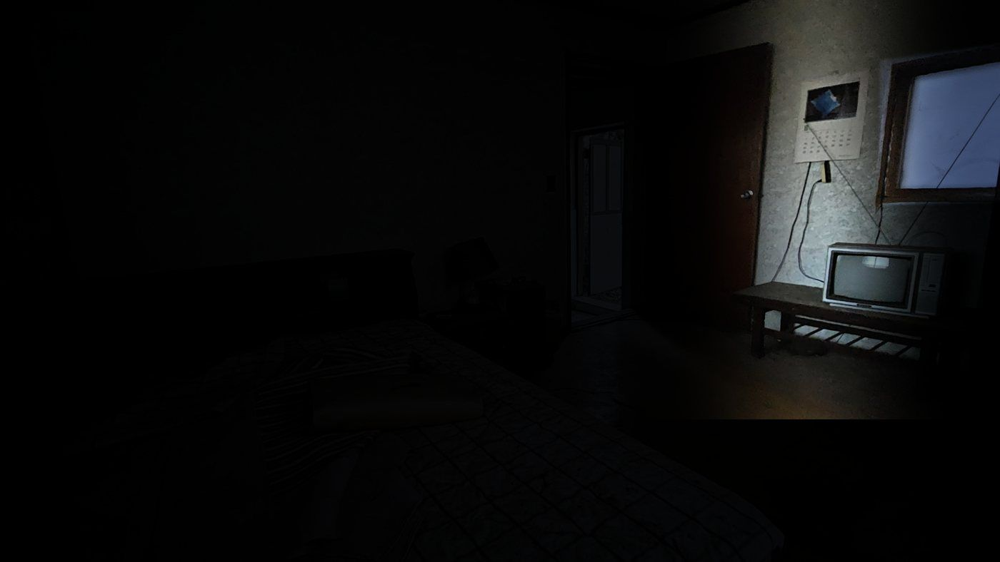
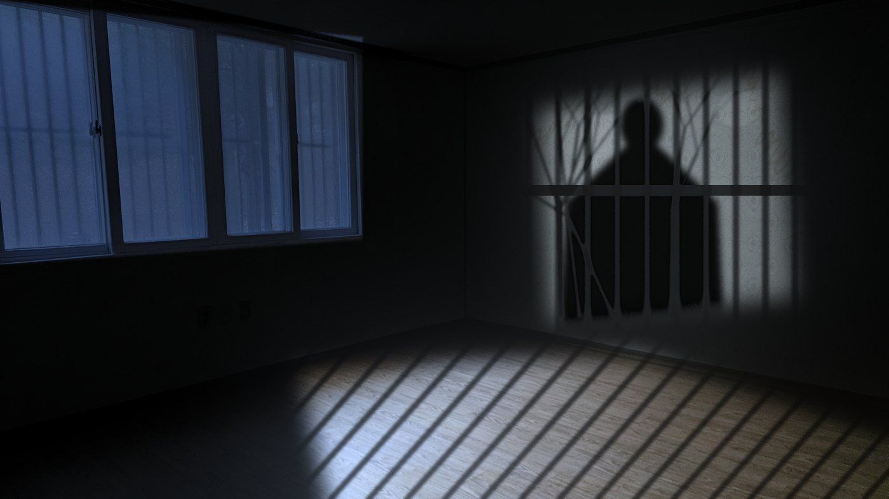
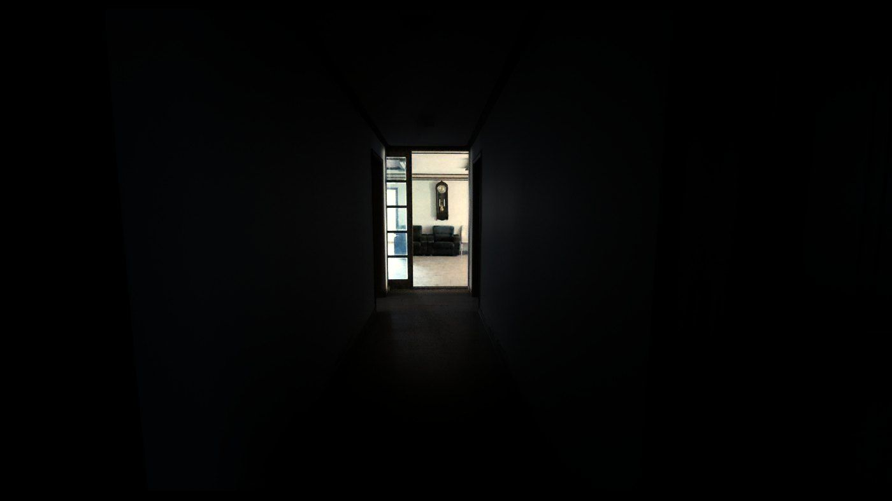
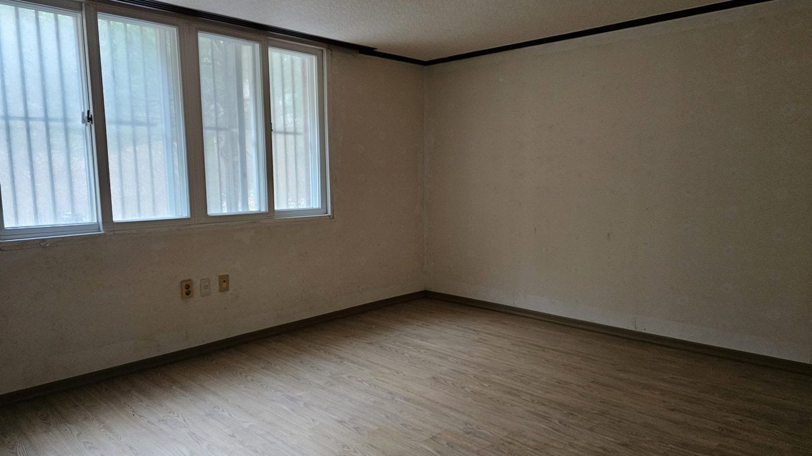

이 방을 이렇게 찍을 수 있겠다고 본 것들
촬영·조명은 Han 님 판단이 먼저지만, 장소를 고르면서 '이 집이면 이렇게 되겠다'고 본 그림을 헌팅 사진 위에 직접 보정해서 붙였습니다. 실제 촬영본이 아니라 방향을 보여 드리기 위한 시안입니다.


달빛은 창살과 가지를 거쳐 들어오게
창밖 멀리(5m 이상) 큰 조명 하나를 두면 그림자가 평행하고 선명해져 '달빛'으로 읽힙니다. 연천처럼 방범창이 있는 집은 창살 그림자가 침대와 벽에 그대로 떨어져 '갇힌 방'이 됩니다. 떼지 말고 살리는 쪽을 권합니다.
창 앞에 실제 나뭇가지를 세워 두면 벽에 가지 그림자가 흔들립니다. 《오아시스》에서 공주가 벽에 비친 나뭇가지 그림자를 무서워하던 것과 같은 장치로, 움직이지 못하는 상진에게 그림자가 다가오는 그림이 됩니다.



등대처럼 훑는 빛
창밖에서 조명을 천천히 패닝하거나 회전시켜 빛 띠가 방을 가로질러 지나가게 합니다. 상진은 고개도 못 돌리는데 빛만 벽→침대→TV로 지나가니, 보는 사람도 빛이 올 때만 방을 봅니다. 창밖에 조명이 움직일 공간(마당·풀밭)이 있는 집일수록 유리합니다 — 포천·연천·웅도·강화.

창밖을 지나는 사촌 남매
1층 집이면 실제로 창밖을 걷게 하고, 달빛 앞을 지나가는 순간 벽에 커다란 그림자가 스칩니다. 사람이 직접 보이지 않아도 됩니다. 창이 2층이거나 창밖에 길이 없는 집(청주·일산 빌라)은 이 그림자만으로 같은 장면을 만들 수 있습니다.


1·8씬 — 방만 빛나고 나머지는 새카맣게
대본의 '방을 제외한 모든 것은 새카맣다'를 연천 복도로 만들어 봤습니다. 복도 끝에서 망원으로 당기면 열린 문 안의 방만 작은 상자처럼 떠 보입니다. 복도가 긴 곳은 연천 HID, 포천, 자유로모텔, 그린캠프입니다. 복도가 없는 웅도는 마당 어둠에서 툇마루 너머 방문을 보는 구도로 바꿉니다.

벽지 — 낡은 집이 먼저, 깨끗한 벽은 이렇게
삼산동(다마스크), 포천(엠보싱), 웅도(꽃무늬 띠), 일산 빌라(꽃무늬)는 벽지가 이미 있습니다. 벽이 깨끗한 연천은 은은한 무늬에 위쪽 운 자국, 액자·시계를 떼어 낸 밝은 자국까지 더한 정도면 레퍼런스 톤이 됩니다. 무늬가 크거나 진하면 바로 '세트'로 보여서, 가까이 가야 보이는 정도로 잡았습니다.

색 빛 번쩍임
대본의 색 빛은 짧게 한두 프레임만 방 전체를 물들이고 빠지는 쪽이 좋다고 봤습니다. 평소 방이 거의 무채색의 달빛이라, 붉은색이 한 번 들어오면 크게 튑니다.
장면별 동선 — 위에서 본 그림
6씬 물·진흙 — 세 가지로 그려 봤습니다
어느 장소로 가든 물 장면은 아래 셋 중 하나로 갑니다. 연출 쪽 선택만 정리했고, 장소별로 가능한지는 로케이션팀에서 따로 확인하겠습니다.